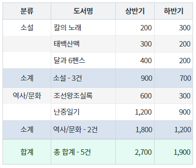
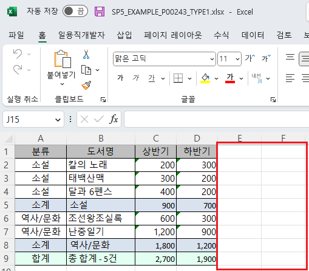
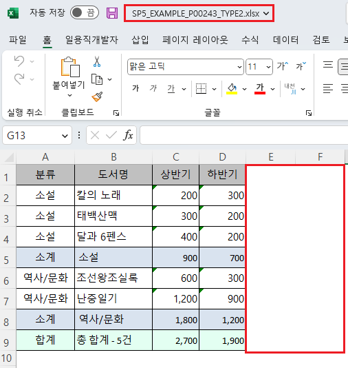

GridView의 엑셀 다운로드(함수 'advancedExcelDownload') 옵션 중 공통으로 스타일을 적용할 수 있는 옵션 설정의 예제입니다. 스타일을 지정할 수 있는 옵션은 아래와 같습니다. - rowHeight : [default: 없음] Excel 파일로 다운로드 할 때 엑셀의 셀 높이. (단위: pixel) - displayGridlines : [default: true, false] Excel 파일 전체 셀의 눈금선 제거 유무
엑셀 다운로드 - 기본 동작
엑셀 다운로드 - 공통 스타일 적용
다운로드된 엑셀 파일의 행 높이, 눈금선 유무를 비교합니다.
서브토탈(subtotal)과 푸터(footer)가 표현되어 있습니다.
[브라우저(Chrome) 실행 예시]

엑셀 파일 "SP5_EXAMPLE_P00243_TYPE1.xlsx"이 다운로드 됩니다.
다운로드 된 엑셀 파일 'SP5_EXAMPLE_P00243_TYPE1.xlsx'을 실행합니다.
눈금선이 표시되고, 행의 높이가 기본 값으로 설정되어 있습니다.
[다운로드된 엑셀(2021) 파일 예시]

서브토탈(subtotal)과 푸터(footer)가 표현되어 있습니다.
[브라우저(Chrome) 실행 예시]
엑셀 파일 "SP5_EXAMPLE_P00243_TYPE2.xlsx"이 다운로드 됩니다.
다운로드 된 엑셀 파일 'SP5_EXAMPLE_P00243_TYPE2.xlsx'을 실행합니다.
눈금선이 표시되지 않고, 행의 높이가 '30px'로 설정되어 있습니다.
[다운로드된 엑셀(2021) 파일 예시]

[소스 코드 예시]
//예제 파일의 스크립트 "scwin.btn_ex2_onclick"를 참고하세요. var jsnOptions; jsnOptions = { fileName: "SP5_EXAMPLE_P00243_TYPE2.xlsx", //엑셀의 파일명 useSubTotal: "true", //필수 지정 - subTotal 표시 rowHeight: "30", //Excel 파일로 다운로드 할 때 엑셀의 셀 높이. (단위: pixel) displayGridlines: "false" //Excel 파일 전체 셀의 눈금선 제거 유무 }; //GridView "grd_exam1"의 엑셀 다운로드 실행 grd_exam1.advancedExcelDownload(jsnOptions);
options.useSubTotal
options.rowHeight
options.displayGridlines
[웹스퀘어5 SP5 개발 가이드] GridView
링크 : https://docs1.inswave.com/sp5_user_guide/bc10c1b82c9a2a0b#e1c4658baf7e726f
[웹스퀘어5 SP5 개발 가이드] GridView → Excel 다운로드
링크 : https://docs1.inswave.com/sp5_user_guide/bc10c1b82c9a2a0b#9fb910628c27d550
[웹스퀘어5 SP5 개발 가이드] Excel 파일 스타일 설정
링크 : https://docs1.inswave.com/sp5_user_guide/bc10c1b82c9a2a0b#7a3bda36f7d0b2e6